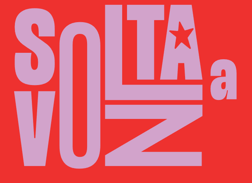

Em poucas linhas
De 2022 para 2026
Cidades com mais votos: 2022 × 2026
Onde a Ana mais cresceu (votos a mais que em 2022)
Inclui cidades onde ela não tinha nenhum voto em 2022.
Onde a Ana teve voto
Todas as cidades
Regionais de BH
Votos por regional: 2022 × 2026
Contatos × votos por regional (2026)
A votação bairro a bairro
Cada escola de votação foi colocada no seu bairro oficial e os votos de cada seção foram somados por bairro, em 2022 e em 2026. O mapa mostra onde a Ana é mais forte e onde mais cresceu; também é possível ver, como camada extra, os contatos da mobilização em cada bairro.
Todos os bairros
O que foi construído
Linha do tempo das ações
Cada barra mostra o período de captação de cada ação (do primeiro ao último registro).
Contatos por ação (sem repetição)
Uma base que se conversa
Time Ana
Funil do site
Rede de lideranças
Assinaturas por dia e acumulado
Cidades com mais assinaturas
Bairros de BH com mais assinaturas
Cada ação no seu território
Pesquisas porta a porta

Alto Vera Cruz: o que os moradores sabiam da Ana
Como acompanham a política
Pesquisa Alto Vera Cruz, respostas com um único meio.
As pautas da Ana no território
A pesquisa e a urna
Entre os 8 nomes do disco: pesquisa × urna
Pesquisa: % de quem escolheu um dos 8 nomes. Urna: % dos votos somados desses 8 candidatos em Viçosa.
Intenção de voto na Ana por perfil
A Ana e a federação nos mesmos lugares
Para separar o movimento da candidata do movimento geral da esquerda, comparamos, nos mesmos territórios, o crescimento da Ana com o crescimento dos outros candidatos a deputado estadual da sua federação (PT, PCdoB e PV). Os bairros e as cidades foram divididos em quatro grupos, do menor para o maior número de contatos por eleitor.
Bairros de BH
Cidades de MG (fora BH)
Bairros de BH: contatos × votos (por mil eleitores)
Novos territórios
Onde agir agora
Muitos contatos, votação abaixo do potencial
Bairros com base cadastrada grande e poucos votos por contato. Prioridade para relacionamento e mobilização.
Muitos votos, poucos contatos
Bairros onde a Ana já tem voto, mas quase não há contatos na base. Prioridade para captação.